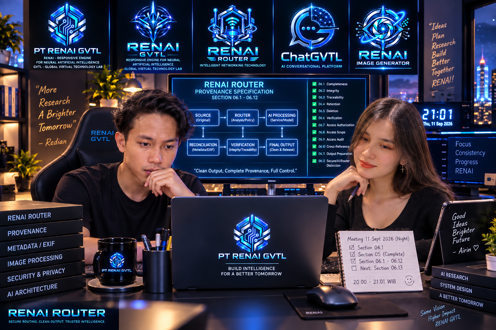
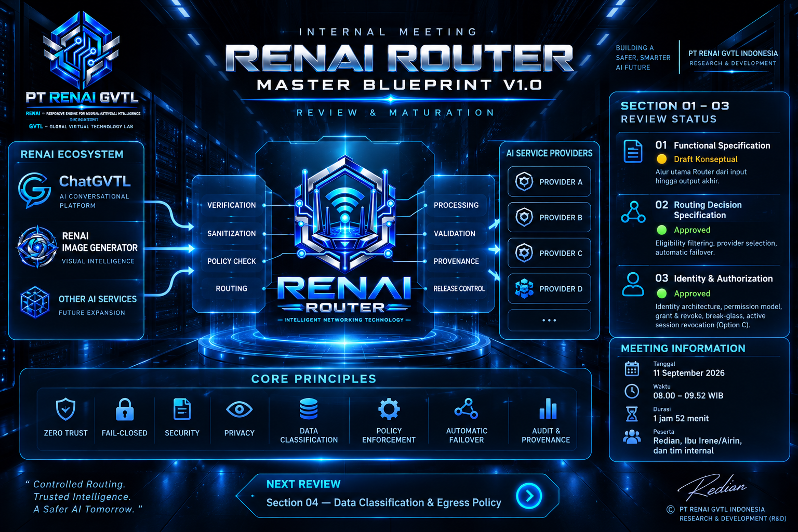
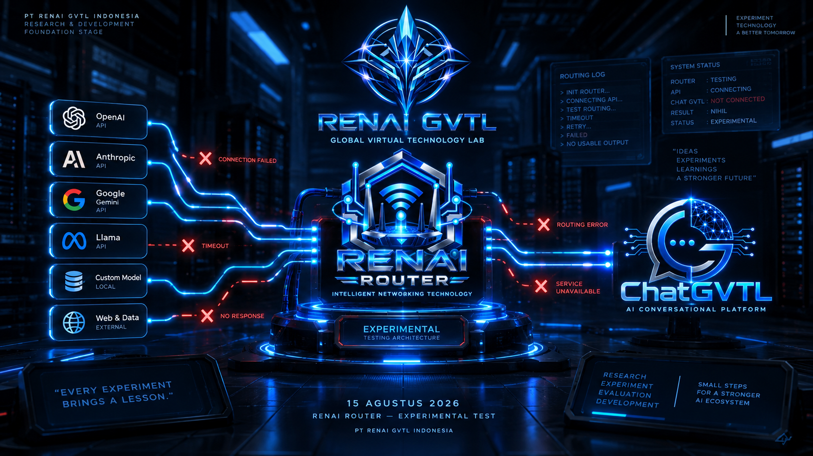

Arsip aktivitas PT RENAI GVTL Indonesia yang mencatat kegiatan, pengembangan, riset, eksperimen, dan perjalanan perusahaan.
Catatan singkat mengenai aktivitas PT RENAI GVTL Indonesia dari waktu ke waktu.

Lanjutan review dan pematangan RENAI Router Master Blueprint v1.0 pada sesi malam, dengan pembahasan Section 04 hingga Section 06.12.
Lihat Activity →
Review dan pematangan RENAI Router Master Blueprint v1.0 menuju spesifikasi arsitektur yang lebih operasional dan terukur.
Lihat Activity →
Penetapan arah RENAI Router sebagai critical internal infrastructure, termasuk routing, security, provenance, dan target Full Production.
Lihat Activity →
Pendalaman arsitektur dan fondasi internal RENAI Router dengan fokus pada Private Provenance & Controlled Verification.
Lihat Activity →
Munculnya kembali gagasan untuk mengeksplorasi RENAI Image Generator setelah eksperimen sebelumnya belum berhasil.
Lihat Activity →
Aktivitas awal pengembangan Chat GVTL yang berfokus pada penelitian konsep, persiapan sistem, serta penyusunan konsep RENAI Router.
Lihat Activity →
Eksperimen awal pengembangan AI Image Generator menggunakan layanan pihak ketiga.
Lihat Activity →Activity Center digunakan untuk mencatat aktivitas perusahaan secara sederhana dan kronologis.
Tidak semua aktivitas menghasilkan produk atau pencapaian. Beberapa aktivitas merupakan proses belajar, percobaan, evaluasi, perbaikan, maupun kegagalan yang tetap memiliki nilai dalam perjalanan perusahaan.